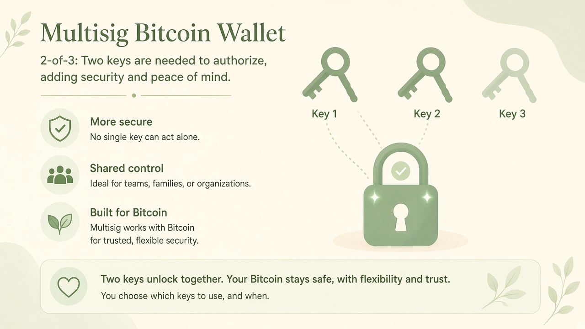

No single key acts alone
An attacker who compromises one device or one person still needs a second independent key. That is layered control, not a new entropy formula.
Teach process only. This site never generates SSH keys, Bitcoin seeds, or recovery phrases. Do not type a real private key or seed into any website — including this one.
Layered control
Multisig does not make one seed “bigger.” It changes the story of who must cooperate. In a 2-of-3 setup, any two of three keys can authorize a spend. One lost key is survivable. One stolen key is not enough.

An attacker who compromises one device or one person still needs a second independent key. That is layered control, not a new entropy formula.
Families, teams, and organizations use 2-of-3 so no one person is a single point of failure. One person can also hold three keys in three places for the same reason.
Each key in the quorum should still be created with strong entropy and stored the way you would store a BIP39 seed. Weak keys do not become strong because they are counted in a group.
There is no single “multisig is N times safer” number that fits every household. The useful picture is: the attacker’s job becomes two independent problems (or two colluding people), instead of one. Losing one backup is also two independent problems — you still have two keys left.
That is why people separate the three keys: different rooms, different cities, different hardware, different people. Stacking all three keys in one drawer undoes the story.
Multisig changes who must cooperate. It does not replace the size of the haystack behind each key.